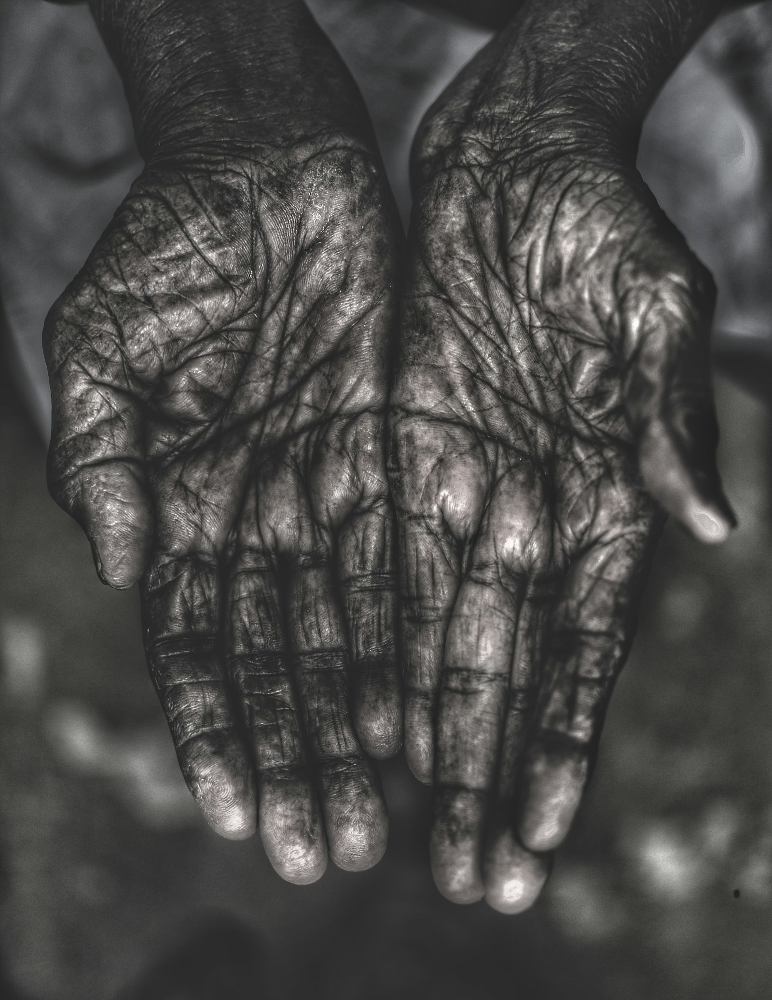
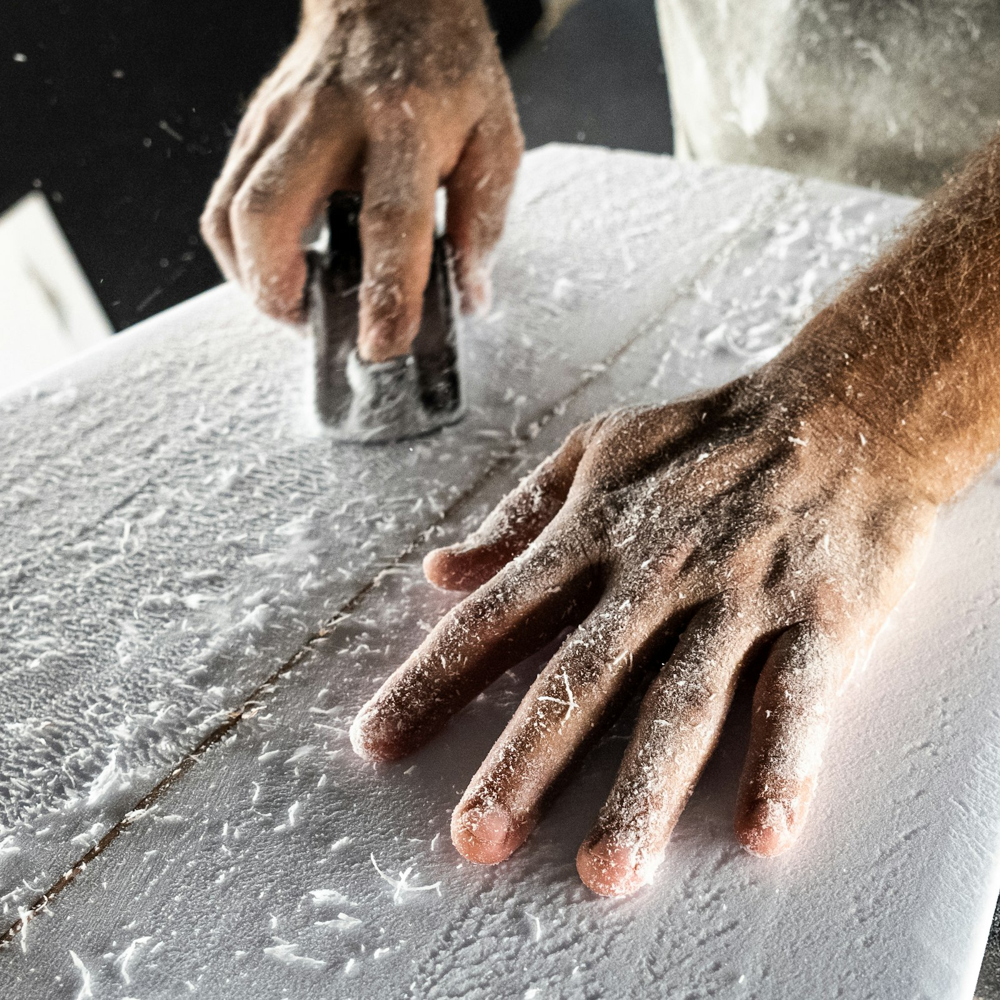
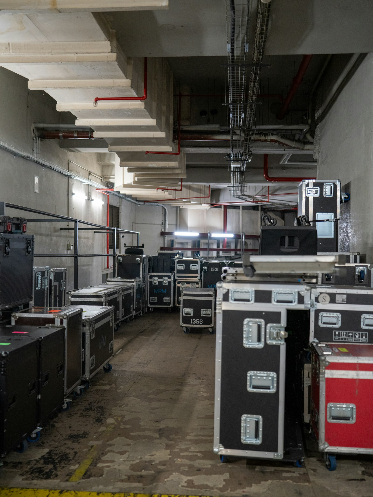
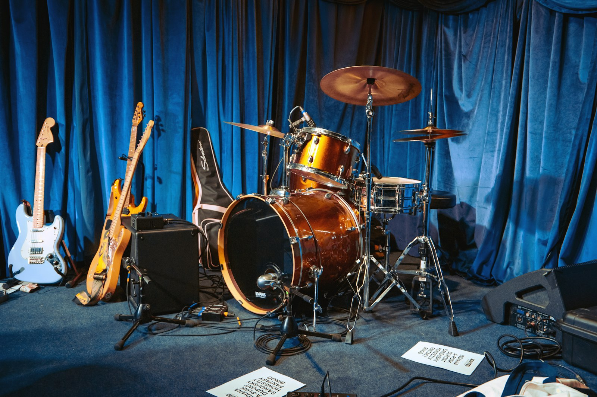
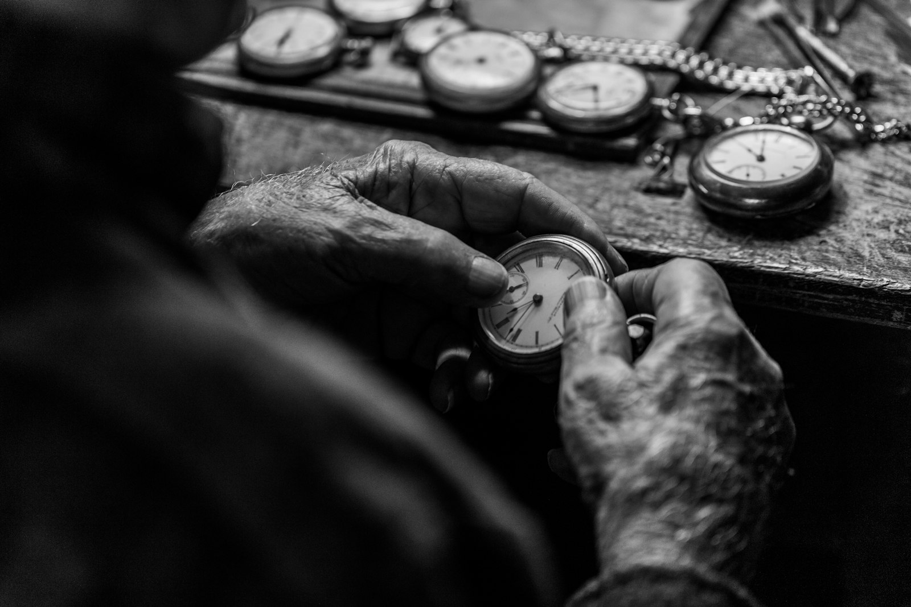
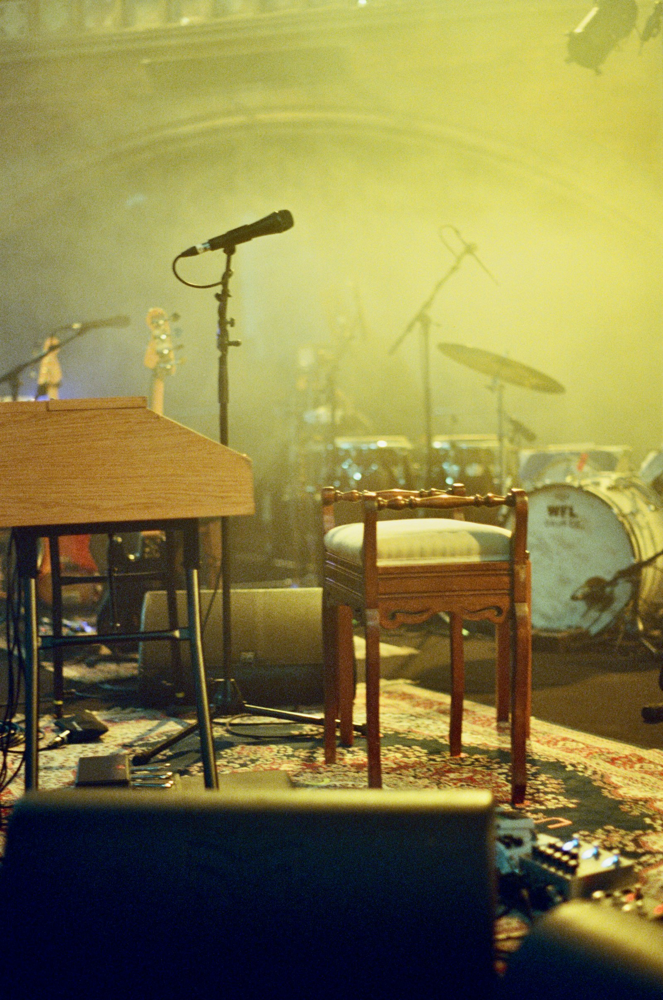
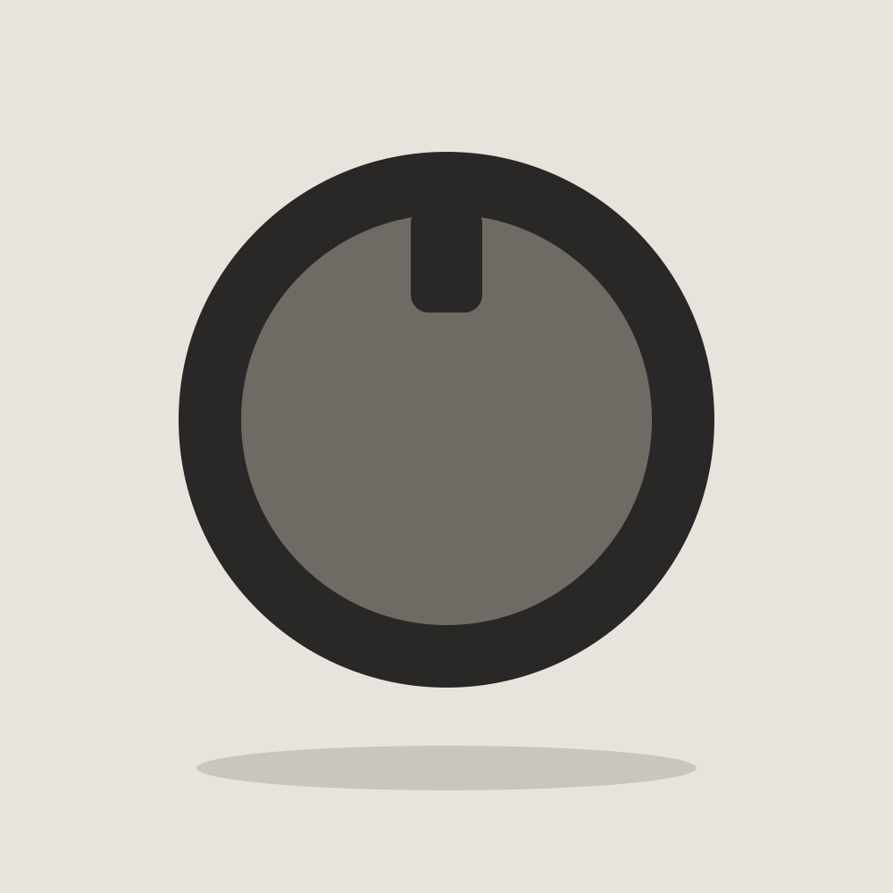
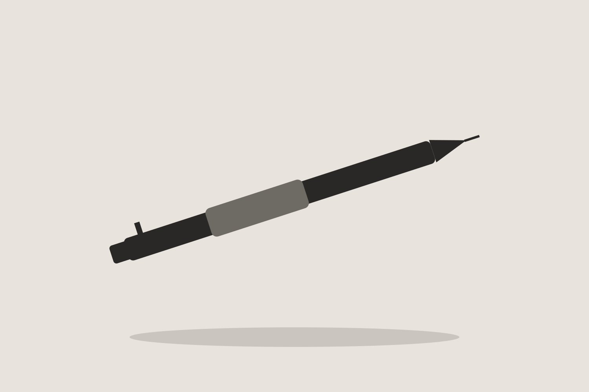
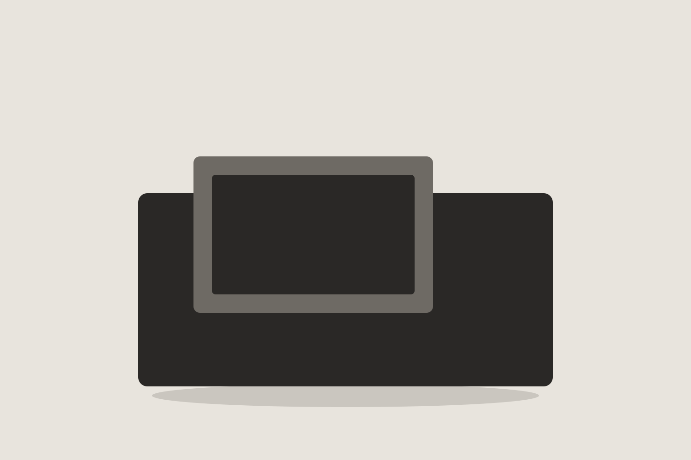

다섯 장 모두 화면 위쪽 절반 이상이 비어 있고, 구름이 있어도 한쪽 귀퉁이에 몰려 있다. 양옆으로 건물 벽이 조금씩 걸쳐 있어서 하늘이 위로 길게 뻗은 띠처럼 보이는 사진이 대부분이다.

건물 사이로 좁게 보이는 하늘만 골랐는데, 넓은 하늘보다 틈으로 보이는 하늘이 더 멀어 보였기 때문이다.
나는 비어 있는 쪽이 넓은 사진을 고른다.
다섯 장 모두 화면 위쪽 절반 이상이 비어 있고, 구름이 있어도 한쪽 귀퉁이에 몰려 있다. 양옆으로 건물 벽이 조금씩 걸쳐 있어서 하늘이 위로 길게 뻗은 띠처럼 보이는 사진이 대부분이다.
건물 사이로 좁게 보이는 하늘만 골랐는데, 넓은 하늘보다 틈으로 보이는 하늘이 더 멀어 보였기 때문이다.
세 장 모두 손바닥이 위를 향하거나 손가락이 느슨하게 펴져 있고, 손 말고 다른 물건은 거의 찍혀 있지 않다. 배경이 어둡거나 흐려서 손의 주름과 그림자가 먼저 눈에 들어온다.


무언가를 쥐고 있는 손보다 쉬고 있는 손이 좋아서, 고르고 나니 손가락이 펴진 사진만 남았다.
사람도 차도 없는 길만 남았는데, 세 장 모두 길이 화면 아래 가운데에서 시작해 위쪽 끝으로 사라진다. 길 양옆은 들판이나 낮은 언덕이라 시선이 막히는 곳이 없다.

사람이 한 명도 없는 길을 골랐는데, 끝이 화면 밖으로 나가는 길일수록 오래 보게 된다.
나는 이 사람의 무대보다, 무대 뒤에서 같은 부분을 열 번 고치는 태도가 좋다.
리허설 영상에서 첫 소절에 들어가는 타이밍을 열 번 넘게 다시 맞추는데, 매번 밴드에게 어디가 어긋났는지 짧게 말하고 처음부터 다시 시작한다.

완성은 한 번에 오지 않는다는 걸 아는 사람 같다.
공연 전에 믹싱 콘솔 앞에 직접 앉아 소리를 조정하고, 객석 맨 뒤까지 걸어가 들어 본 다음 돌아와서 한 번 더 손을 댄다.

결과물의 마지막 1%까지 자기 손으로 책임진다.
공식 채널에 완성곡보다 작업 과정 영상을 더 자주 올리고, 틀린 부분을 다시 부르는 장면도 잘라 내지 않은 채 그대로 둔다.

과정을 보여 주는 사람이라 결과도 믿게 된다.
오후 세 시쯤 빛이 책상 절반까지만 들어와서, 노트를 펼치면 왼쪽 페이지는 밝고 오른쪽 페이지는 그늘에 놓인다. 창 쪽 의자는 늘 비어 있는 편이라 수업이 끝나면 가방을 내려놓고 한 시간쯤 더 앉아 있다가 간다.


밝은 쪽과 어두운 쪽이 한 책상에 같이 있어서 오래 앉아 있게 된다.
기계 소리 말고는 아무도 말하지 않고, 기다리는 사람들은 의자 하나씩 떨어져 앉아 각자 휴대폰이나 창밖을 본다. 건조기가 도는 동안 따로 할 일이 없어서 들고 간 노트를 펼치게 되고, 빨래를 개는 동안에도 옆 사람과 눈이 마주칠 일이 거의 없다.
기다리는 동안 할 일이 없어서 오히려 생각이 정리된다.
창이 양쪽에 있어서 풍경이 양옆으로 흐르고, 앞자리 사람들의 뒷모습이 한눈에 들어온다. 종점까지 가는 노선이라 내릴 정류장을 신경 쓰지 않아도 되니 창밖만 보다가 몇 정거장이 지났는지 잊는다.

움직이는데 가만히 있을 수 있는 자리라 좋다.
아침 수업 전에 커피를 담아 하루 종일 들고 다니고, 오후에는 물을 다시 채워 책상 오른쪽 끝에 세워 둔다.


손에 쥐었을 때 차갑지 않고 무게가 딱 한 손에 맞는 데다, 뚜껑을 한 번에 돌려 열 수 있어서 수업 중에도 소리가 안 난다.
스케치 첫 선을 그을 때만 쓰고, 선이 잡히면 펜으로 바꿔 그 위를 다시 따라 그린다.

선이 가늘어서 틀려도 덮어 그리기 쉽고, 쥐는 부분이 고무라 오래 그려도 손가락이 덜 아프다.
수업 메모와 아이디어 스케치를 한 권에 섞어 쓰는데, 날짜만 적고 칸을 나누지 않아서 한 쪽에 글과 그림이 같이 들어간다.


줄이 없어서 글과 그림의 자리를 내가 정할 수 있고, 종이가 두꺼워 펜이 뒷장에 배지 않는다.
작업할 때 같은 플레이리스트를 반복해서 듣고, 다 들으면 줄을 손가락에 감아 가방 앞주머니에 넣는다.

충전할 필요가 없어서 잊어버릴 일이 없고, 줄을 감아 두는 버릇 덕분에 가방 속에서 바로 찾는다.
노트북과 노트를 넣고 매일 들고 나가는데, 어깨에 메면 바닥이 허리쯤 와서 걸을 때 몸에 붙어 흔들리지 않는다.


바닥이 넓어서 노트북이 눕혀 들어가고, 오래 써서 부드러워진 천의 감촉이 좋다.